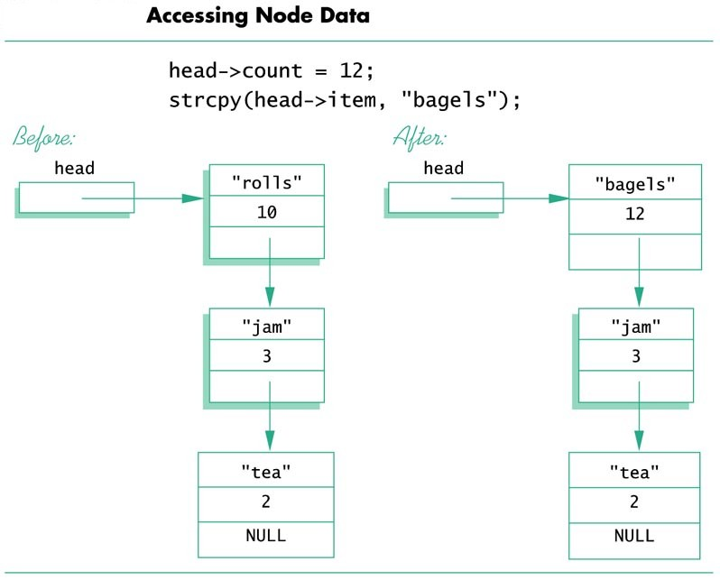
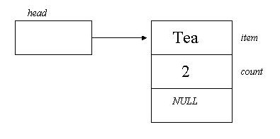
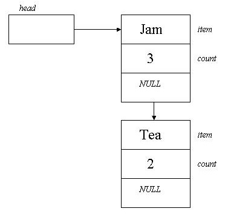

struct ListNode
{
string item;
int count;
ListNode *link;
};
typedef ListNode* ListNodePtr;
Now if we use this to create a pointer variable head as:
ListNodePtr head;
Then we have something that looks like this:
Figure (1) - The head pointer pointing to the empty head node
The above struct can be used to create items that are known as nodes. In the above diagram, we have drawn one node, the three-partition box on the right. We may have many of these nodes connected with arrows that represent pointers. In the above diagram, the box head is not a node. It is a pointer variable that points to a node. We have something that looks like the following diagram. The first node in a linked list is called the head and that is the reason we also call the pointer that points to it head.

Figure (2) - Assigning node data
In this diagram, on the left and the right side you will see a list with three nodes. Let's look at the one on the left first. As you can see head points to the node with item = "rolls" and count = 10. This node with item = "jam" and count = 3 and that node, in turn, points to the node with item = "tea" and count = 2. Because the bottom node does not point to anything, we say that points to Null. Null is a special constant value that is used to give a value to a pointer variable that would not otherwise have a value. We will explain how this list was created very soon. Before we get that far, let's talk about a few other things. Let's first learn how to update one of the nodes. As you may have noticed, on the right-hand-side of the above diagram you have modified the first node of the diagram on the left-hand-side. To make this modification you can use one of the following two methods:
Method 1:
(*head).item = "bagels";
(*head).count = 12;
The parentheses are NOT optional.
Method 2:
head-> item = "bagels";
head-> count = 12;
Thus, if you have the list in place, you know how to modify its nodes.
The next question perhaps would be "How was this linked list created?"
In order to create a linked list, you need to go through a few steps. In the process of building a linked list, we use a process referred to as insert to add new nodes. In the above program segment, we have
ListNodePtr head;
Which is a pointer, but does not point to anything yet. So the first thing we want to do is to make head points to a node, but we need to create a node to which it will point. The following command will create a new node:
head = new Node;
Now we have something that looks like the list shown on Figure (1).
This is referred to as an empty list. We can put something
in the empty node using:
head -> item = "Tea";
head -> count = 2;
head -> link = NULL;

Figure (3) - The head node with data
Inserting a Node at the Head of a List
Now we have a list with one node. To insert more nodes, we will
go through the following process:
1) Declare a pointer variable tmp_ptr, Create
a Node pointed to by temp_prt:
2) Place the data in this new node:
3) Make the link member of this new node point to the head node of the original linked list:
4) Make the pointer variable named head point to the new node
Now we have the list similar to the one shown on Figure (4).

Figure (4) - Inserting a node at the top
In order to make an insertion, we usually use a function called insert to do this for us. Here is a C++ program which creates the linked list.
void head_insert(NodePtr& head, string an_item, int a_count)
Here is a C++ program that creates the linked list on Figure (2).
// P15_1.cpp - Program to demonstrate the function head_insert.
#include <iostream>
#include <cstddef>
#include <string>
using namespace std;
struct Node
{
string item;
int count;
Node *link;
};
typedef Node* NodePtr;
void head_insert(NodePtr& head, string an_item, int a_number);
void show_list(NodePtr& head);
int main()
{
NodePtr head = NULL;
head_insert(head, "Tea", 2);
head_insert(head, "Jam", 3);
head_insert(head, "Rolls", 10);
show_list(head);
return 0;
}
void head_insert(NodePtr& head, string an_item, int a_number)
{
NodePtr temp_ptr;
temp_ptr = new Node;
temp_ptr-> item = an_item;
temp_ptr-> count = a_number;
temp_ptr->link = head;
head = temp_ptr;
}
void show_list(NodePtr& head)
{
NodePtr here = head;
while (here != NULL)
{
cout << here-> item << "\t";
cout << here-> count << endl;
here = here->link;
}
}
Exercise
15.1
In the above program make the necessary changes so that a new struct,
date,
is
defined for the expiration date of the product. Thus, an expiration
date, day, month, and year, will be associated with each
node. Use the following expiration dates for each item:
Rolls 08/10/2003
Jam 09/12/2003
Tea 01/01/2010